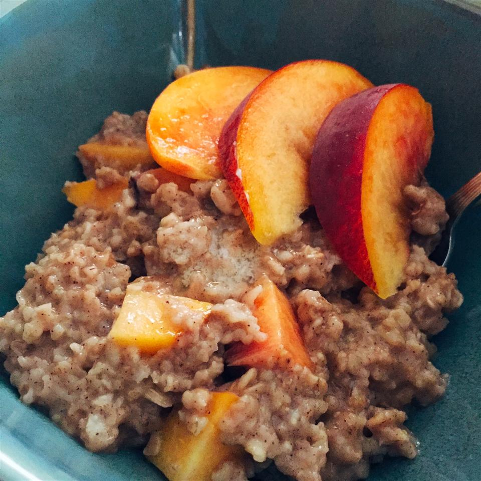

Peachy Oatmeal

Description
This creamy, chocolatey oatmeal is great as a dessert or for anyone who just wants a sweet breakfast! If you're not too fond of oatmeal by itself (eww) then give this recipe a try and it might change your mind!
With just a little bit of oatmeal, chocolate, and a secret ingredient, you might want to branch out to other oatmeal recipes after enjoying this delicious dish.
Ingredients
- 1/2 cup of quick oats
- 15 ounces of sliced peaches
- 1/2 cup almond milk
- 2 tsp brown sugar
- 1/2 cup cup of water
- 1/4 tsp of cinnamon
- pinch of salt
Directions
- Stir peaches, water, milk, oats, brown sugar, cinnamon, and salt together in a microwave-safe bowl
- Cook in microwave on High, stirring every 60 seconds, until the oats are softened, about 3 minutes. Stir one final time before serving